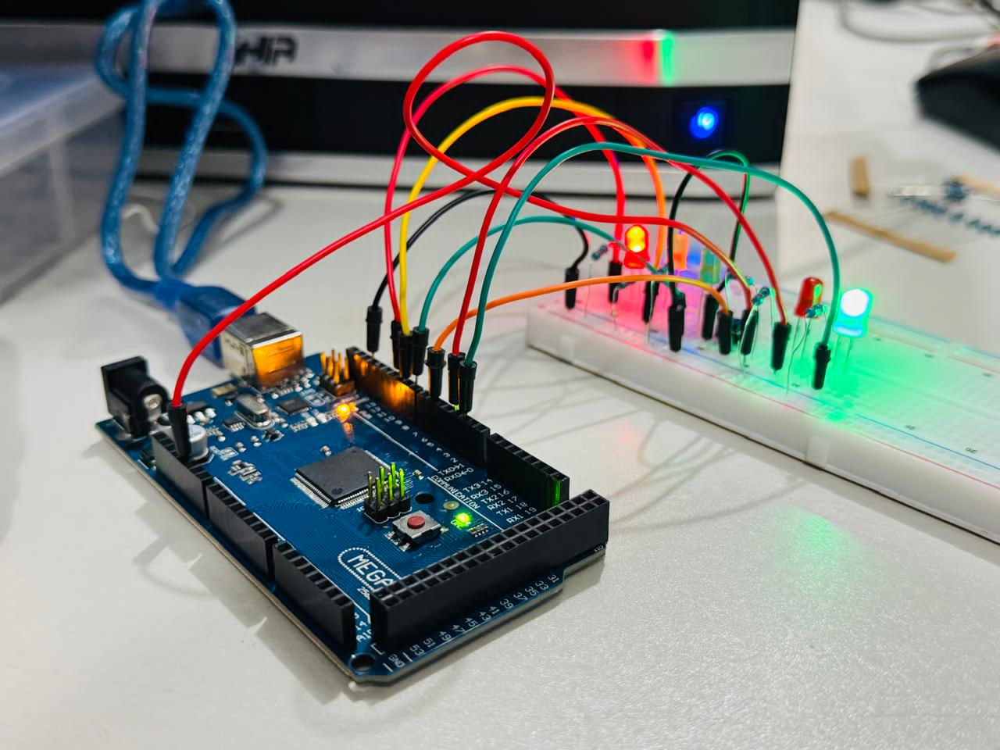
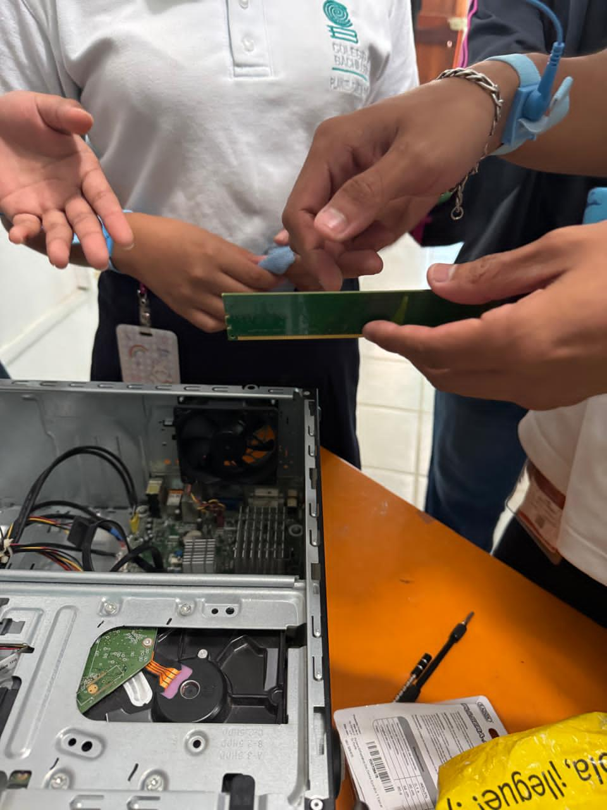
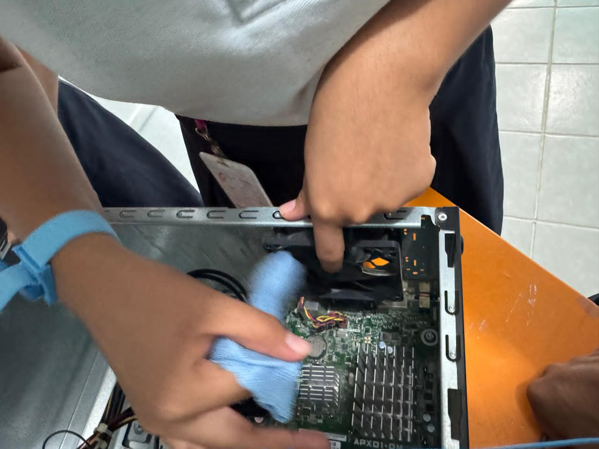
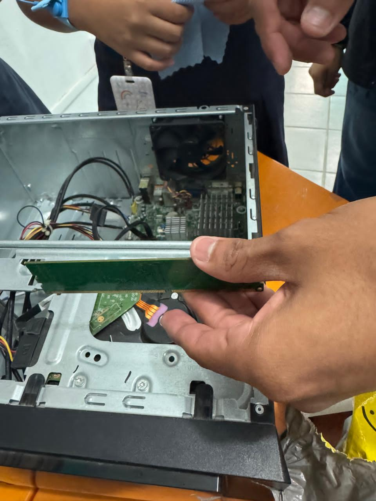

Capacitación en Programación
Monitoreo físico de componentes, lógica de desarrollo y control de circuitos embebidos.
Galería Física: Ensamble y Diagnóstico

IMG-20260608-WA0048.jpg

IMG-20260608-WA0022.jpg

IMG-20260608-WA0021.jpg

IMG-20260608-WA0023.jpg
Demostraciones en Video del Firmware
VID-20260608-WA0031.mp4
VID-20260608-WA0033.mp4
VID-20260608-WA0051.mp4
VID-20260608-WA0049.mp4
VID-20260608-WA0059.mp4